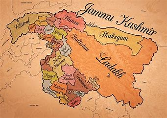
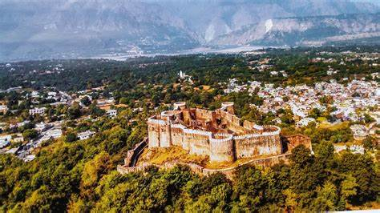

Ancient and Medieval Period
*Ancient Roots:-
The history of Jammu and Kashmir dates back to ancient times, with archaeological evidence suggesting human habitation as early as the Stone Age.
The region is mentioned in several ancient texts, including the Nilamata Purana, which details its geography, culture, and religious significance.

*Hindu and Buddhist Influence:-
During the early centuries CE, Jammu and Kashmir became a significant center for Hinduism and later Buddhism. The region was known for its numerous temples and stupas, attracting scholars and pilgrims. Notable Buddhist universities emerged, fostering philosophical thought and attracting students from various parts of Asia.
*Dynastic Rule:-
The region saw the rise and fall of several dynasties. The Karkota dynasty (7th to 9th centuries) was particularly influential, promoting both Hindu and Buddhist traditions and advancing the arts. The Utpala dynasty followed, continuing the patronage of culture and religion, with kings like Avantivarman contributing to architectural and literary achievements.

Muslim Rule in Jammu and Kashmir
The history of Jammu and Kashmir dates back to ancient times, with archaeological evidence suggesting human habitation as early as the Stone Age. The region is mentioned in several ancient texts, including the Nilamata Purana, which details its geography, culture, and religious significance.